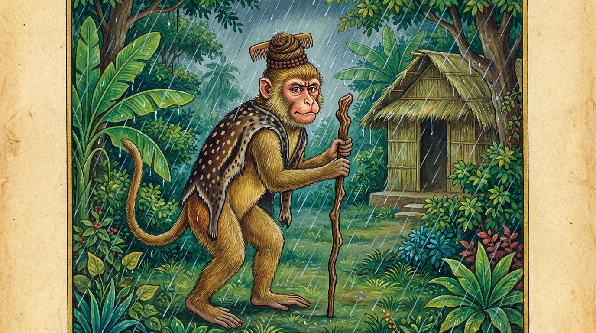

10. කපි ජාතකය (250)
‘අයං ඉසී උපසමසඤ්ඤමෙ රතො’ (රාගාදී කෙලෙස් සංසිඳවීමෙහි ඇලුණු මේ ඉසිවරයා) යන මේ දේශනාව බුදුරජාණන් වහන්සේ ජේතවනාරාමයෙහි වැඩවාසය කරන සමයෙහි, (ඇති ගුණ නැති, නැති ගුණ ඇති කොට දක්වන) එක් කුහක භික්ෂුවක් අරබයා වදාළ සේක. ඒ භික්ෂුවගේ කුහක ස්වභාවය භික්ෂූන් අතර ප්රකට විය. භික්ෂූහු දම්සභාවෙහි කථාවක් උපදවා ගත්හ: “ඇවැත්නි! අසවල් භික්ෂුව, සංසාරයෙන් නික්ම යාමට හේතුවන බුදුසසුනෙහි පැවිදිව කුහක ප්රතිපදාවක් පුරයි.” බුදුරජාණන් වහන්සේ එහි පැමිණ, “මහණෙනි, මා එන්නට පෙර කවර කථාවකින් යුක්තව සිටියේදැ”යි විචාරා, “මෙනම් කථාවෙනැ”යි කී කල්හි, “මහණෙනි! මේ භික්ෂුව දැන් පමණක් කුහකයෙක් වූයේ නොවේ. පෙරත් ගින්නක් හේතුවෙන් වඳුරෙක් වී සිටියදීත් කුහකකම් කළේයැ”යි වදාරා අතීත කථාව ගෙනහැර දැක්වූ සේක.
යටගිය දවස බරණැස් නුවර බ්රහ්මදත්ත රජු රාජ්ය කරන කල්හි බෝසතාණන් වහන්සේ කාසි රටෙහි බ්රාහ්මණ කුලයක ඉපදී, වැඩිවියට පත් වූහ. (ඔහුගේ) පුතා දුව පැන ඇවිදින වයසේදී බැමිණිය මළ බැවින්, පුතා වඩාගෙන හිමාල වනයට පිවිස සෘෂි පැවිද්දෙන් පැවිදිව, ඒ පුතු ද තාපස කුමාරයෙකු කොට පන්සලෙහි වාසය කළේය. වැසි කාලයෙහි නොකඩවා එකදිගට වැසි වසින කල්හි එක් වඳුරෙක් සීතලෙන් පීඩිතව, දත් කමින් වෙවුලමින් හැසිරෙයි. බෝසතාණන් වහන්සේ විශාල දර කඳන් ගෙනැවිත් ගිනි දල්වා ඇඳෙහි වැතිරුණහ. ඔහුගේ පුතා ද පා පිරිමදිමින් හුන්නේය. ඒ වඳුරා මියගිය එක් තාපසයෙකුට අයත් වල්කල (ගස් පොතු) හැඳ පොරවාගෙන, අඳුන් දිවිසමක් ඒකාංශ කොට, කාජය (කද) සහ පැන් කෙණ්ඩිය ද ගෙන තාපස වේශයෙන් අවුත්, පන්සල් දොරටුව ළඟ ගින්දර තැපීම උදෙසා කුහකකම් කොට සිටියේය. තාපස කුමාරයා ඌ දැක, “පියාණෙනි! සීතලෙන් පීඩා විඳින එක් තාපස කෙනෙක් වෙවුලමින් සිටී. ඔහු මෙහි කැඳවන්න. ගිනි තපා ශීතල දුරු කර ගනීවා”යි පියාගෙන් ඉල්ලමින් පළමු වන ගාථාව කීවේය.

“රාගාදී කෙලෙස් සන්සිඳීමෙහි හා සීල සංවරයෙහි ඇලුනු මේ තාපසයා, සීතල නිසා හටගත් බියෙන් පීඩිතව සිටී; එබැවින් මොහු ගෙට පිවිසේවා! (ගිනි තපා) සීතලත් කායික පීඩාවත් මුළුමනින්ම දුරු කෙරේවා!”
එහි උපසමසංයමෙ රතො යනු රාගාදී කෙලෙස් සංසිඳවීමෙහි ද, සීල සංවරයෙහි ද ඇලුනු බවයි. ස තිට්ඨති යනු හෙතෙම සිටියි. සිසිරභයෙන යනු සුළඟ හා වැස්ස නිසා හටගත් සීතලට ඇති බියෙනි. අට්ටිතො යනු පීඩාවට පත් වූයේය. පවිසතුමං යනු මොහු (මේ පන්සලට) පිවිසේවා. කෙවලං යනු සියල්ලම, කිසිවක් ඉතිරි නොකොට යන්නයි.
බෝසතාණන් වහන්සේ පුතාගේ වචනය අසා නැගිට බලන කල, ඌ වඳුරෙකු බව දැන දෙවන ගාථාව කීහ.
“මේ කෙලෙස් සංසිඳීමෙහි ඇලුණු තාපසයෙක් නොවේ; මොහු වෘක්ෂ ශාඛා ගෝචර කොට ඇති (ගස් අතු මත යැපෙන) වඳුරෙකි. හෙතෙම ගිය ගිය තැන මළ මුත්රා කිරීම ආදියෙන් දූෂණය කරන්නෙකි; (ගැටෙන බැවින්) කිපෙන්නෙකි; (ලාමක බැවින්) නීචයෙකි. ඉදින් මොහු ඇතුළට පිවිසියේ වී නම්, මේ පන්සල ද දූෂණය කරන්නේය.”
එහි දුමවරසාඛගොචරො යනු උතුම් ගස්වල අතු ගොදුරු (ආහාර/වාසස්ථාන) කොට ඇත්තා වූ යන්නයි. සො දූසකො රොසකො චාපි ජම්මො යනු ඒ මොහු (වඳුරා) ගිය ගිය තැන දූෂණය (අපවිත්ර) කරන හෙයින් දූෂකයෙකි; (එකිනෙකා හා) ගැටෙන බැවින් රොසකයෙකි; ලාමක ස්වභාවයෙන් යුත් බැවින් ජම්ම (නීච) යෙකි. සචෙ වජෙ යනු ඉදින් මොහු මේ පන්සලට පිවිසෙන්නේ නම්, මළ මුත්රා කිරීමෙන් ද, ගිනි තැබීමෙන් ද යන සියල්ලෙන් (පන්සල) දූෂණය කරන්නේය යනුයි.
මෙසේ කියා බෝසතාණන් වහන්සේ ගිනි පෙනෙල්ලක් ගෙන ඌ තැති ගන්වා පලවා හැරියහ. ඌ උඩ පැන වනයට වැදී පලා ගියේ, නැවත ඒ ස්ථානයට නොපැමිණියේය. බෝසතාණන් වහන්සේ අභිඥා සහ සමාපත්ති උපදවාගෙන, තාපස කුමාරයාට ද කසිණ භාවනාව පුරුදු කරන හැටි කියා දුන්හ. ඔහු ද අභිඥා හා සමාපත්තීන් උපදවා ගත්තේය. ඒ (පිය පුතු) දෙදෙනාම නොපිරිහුණු ධ්යාන ඇත්තාහු, (මරණින් මතු) බ්රහ්ම ලෝකයෙහි උපන්හ.
බුදුරජාණන් වහන්සේ, “මහණෙනි, මොහු දැන් පමණක් නොව පෙරත් කපටිකම් කරන්නෙකැ”යි වදාරා, මේ ධර්ම දේශනාව ගෙනහැර දක්වා චතුරාර්ය සත්යය ප්රකාශ කොට ජාතක කථාව නිමවා වදාළ සේක. සත්ය දේශනාව අවසානයෙහි ඇතැමෙක් සෝවාන් වූහ; ඇතැමෙක් සකෘදාගාමී වූහ; ඇතැමෙක් අනාගාමී වූහ; (ඇතැමෙක් රහත් වූහ). “එකල වඳුරා නම් මේ කුහක භික්ෂුව විය. පුතා රාහුල විය. පියා නම් මම ම වූයෙමි”යි වදාළ සේක.
දසවැනි වූ කපි ජාතක වර්ණනාව යි.
දසවැනි සිඟාල වර්ගය නිමියේය.
එහි (ජාතක) පිළිවෙල මෙසේය:
- සබ්බදාඨි ජාතකය
- සුනඛ ජාතකය
- ගුත්තිල ජාතකය
- විගතිච්ඡ ජාතකය
- මූලපරියාය ජාතකය
- බාලොවාද ජාතකය
- පාදඤ්ජලි ජාතකය
- කිංසුකොපම ජාතකය
- සාලක ජාතකය
- කපි ජාතකය
අනතුරුව වර්ග (පරිච්ඡේද) නාමාවලිය මෙසේය:
- දළ්හ වර්ගය
- සන්ථව වර්ගය
- කල්යාණධම්ම වර්ගය
- අසදිස වර්ගය
- රූහක වර්ගය
- නට (දළ්හ) වර්ගය
- බීරණත්ථම්භක වර්ගය
- කාසාව වර්ගය
- උපාහන වර්ගය
- සිඟාල වර්ගය
යන වර්ග දසය දුක නිපාතයෙහි වෙත්.
දුක නිපාත වර්ණනාව නිමියේය.